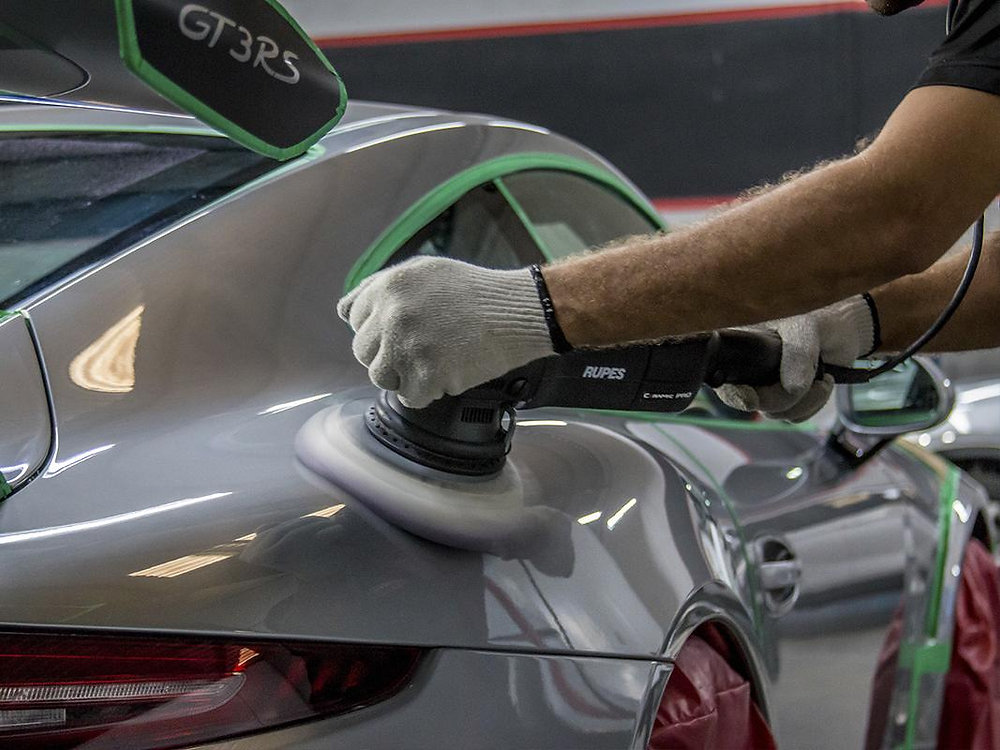
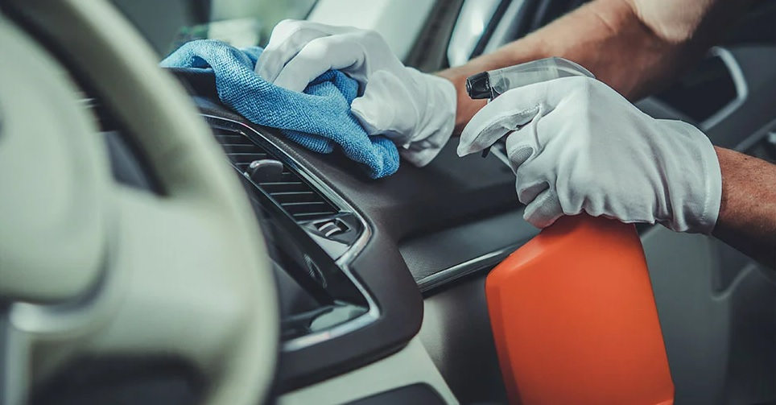
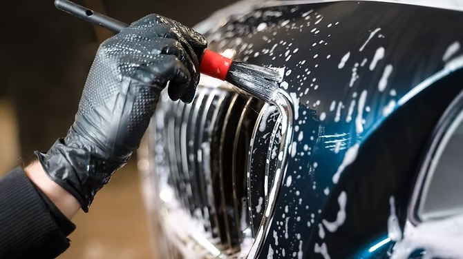
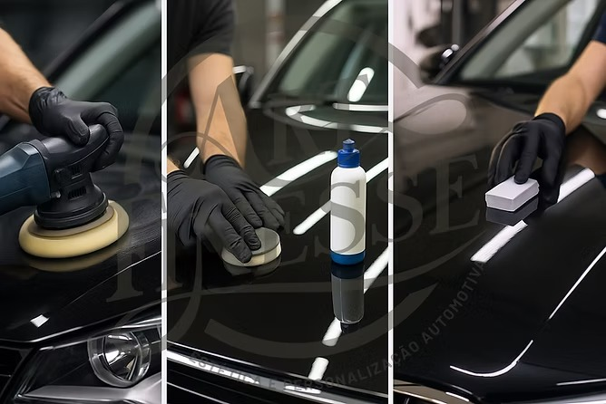
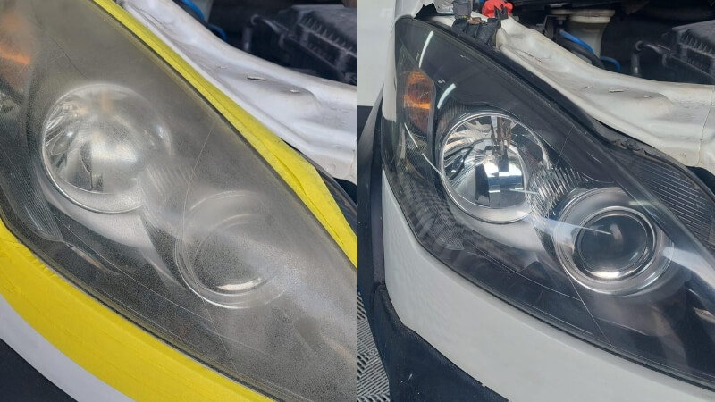
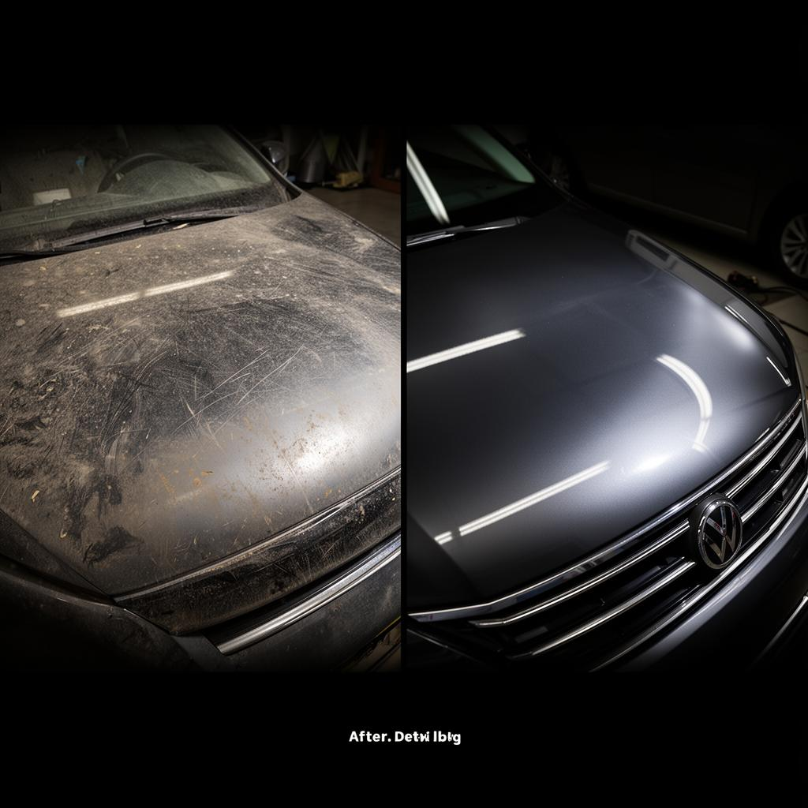
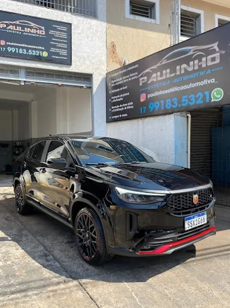

Na Top Car Estética Automotiva, seu veículo recebe tratamento profissional com acabamento impecável em Potirendaba, muito além de uma lavagem comum.
Agendar agora pelo WhatsAppDiferente de lava-rápidos comuns, que focam apenas na velocidade, aqui o cuidado é completo e pensado para preservar e valorizar seu carro no dia a dia.
Contra desgaste, sol, chuva ácida e agentes externos.
Eliminação de contaminações e sujeiras incrustadas.
Acabamento com efeito espelhado de alta intensidade.
Carro bem cuidado vale mais na hora de vender.
Até as áreas mais difíceis recebem atenção total.
Correção de riscos, marcas de redemoinho e imperfeições. Resultado: pintura lisa e brilhante como de fábrica.

Limpeza profunda de estofados, painéis, saídas de ar e carpete. Elimina odores e bactérias.

Processo manual cuidadoso, com produtos premium e atenção a cada detalhe do seu veículo.

Camada protetora de longa duração que mantém o brilho e facilita a limpeza por meses.

Faróis amarelados ou opacos voltam a ter transparência e segurança total na iluminação.
Veja a transformação real que fazemos no seu veículo

Transformação Exclusiva Top Car
"Meu carro saiu zero! Nunca vi um brilho assim. Recomendo demais!"
"Serviço impecável, muito melhor que qualquer lava-rápido. Atenção incrível aos detalhes."
"Vale cada centavo, parece outro carro. A higienização interna ficou perfeita."
"Profissionalismo de verdade. Meu carro nunca esteve tão bonito. Virei cliente fiel!"

A Top Car Estética Automotiva nasceu da paixão por carros e da busca por excelência. Nosso compromisso é entregar um resultado que supera expectativas, com produtos de alta performance, técnicas profissionais e atenção obsessiva a cada detalhe.
Mais do que uma lavagem, oferecemos um tratamento completo que protege, valoriza e transforma o visual do seu veículo. Somos referência em qualidade e confiança em Potirendaba e região.
O tempo varia de acordo com o serviço escolhido. Uma lavagem detalhada leva em média de 2 a 3 horas, enquanto polimentos e vitrificações podem levar de um dia para o outro para garantir o acabamento perfeito.
Sim, trabalhamos com horário marcado para garantir um atendimento exclusivo e o tempo necessário de dedicação para cada veículo.
O polimento técnico remove cerca de 85% a 95% dos micro-riscos e hologramas superficiais. Riscos muito profundos que atingiram a chapa ou o fundo da pintura podem precisar de retoque.
Depende da proteção aplicada. Uma cristalização comum dura alguns meses, enquanto tratamentos de vitrificação de pintura podem proteger e manter o brilho intenso por anos, com a manutenção correta.
Lava-rápidos tradicionais focam em volume e usam escovas ou produtos agressivos que riscam a pintura (criando teias de aranha). Nós usamos técnicas manuais seguras, panos de microfibra limpos e produtos com pH balanceado para preservar o verniz do seu carro.